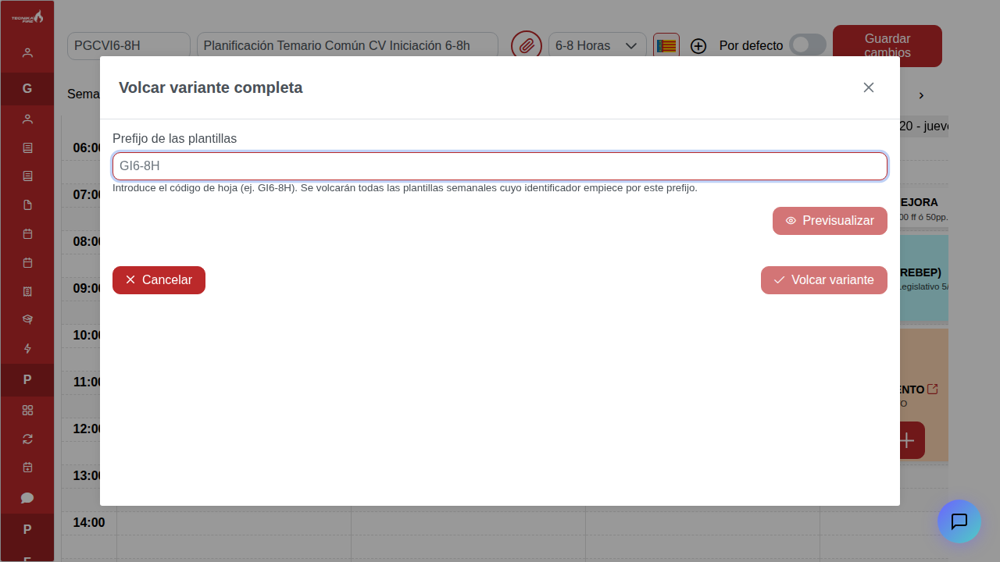
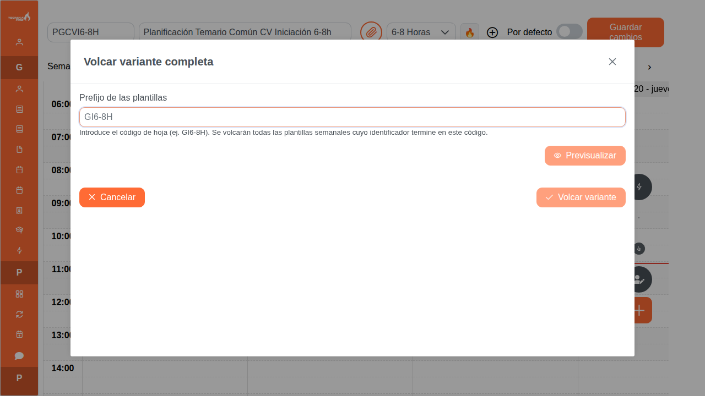
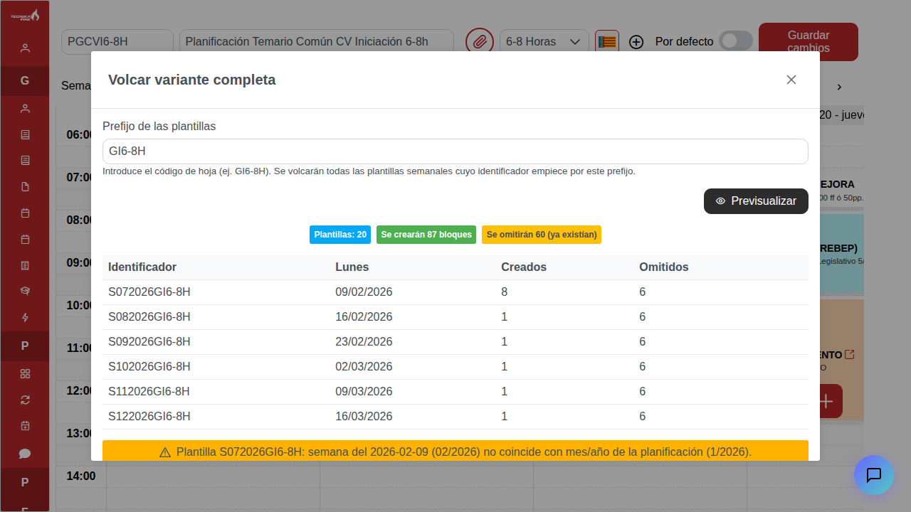
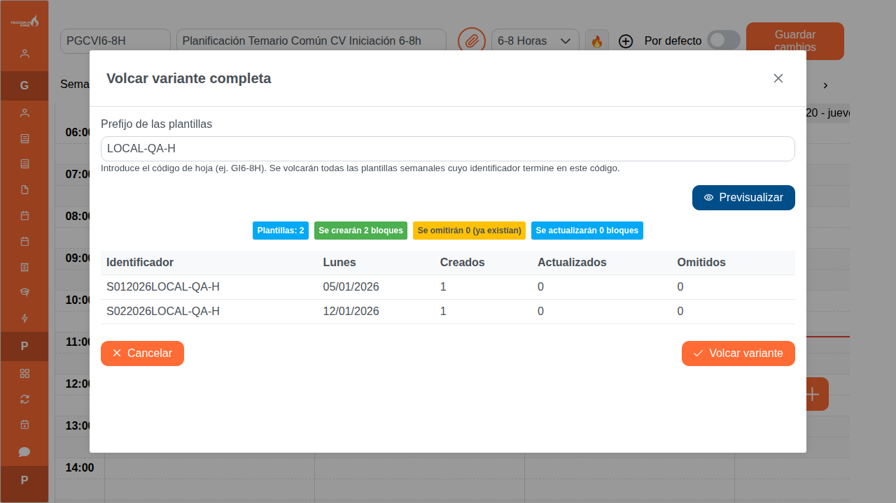
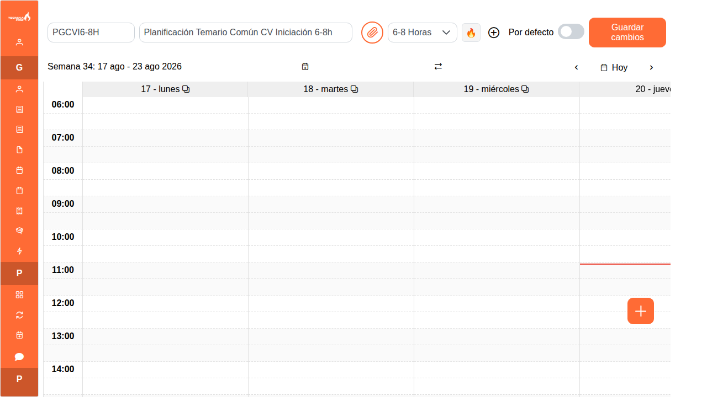

Se conserva el flujo y se corrige el texto de ayuda para reflejar el contrato real del backend: se buscan identificadores que terminan en el código de hoja.


La tabla ahora muestra también «Actualizados», junto a creados y omitidos, y el resumen usa los mismos contadores. La captura posterior usa dos plantillas temporales de QA local y no se volcó en la planificación.


Estado después de autenticación y navegación end-to-end al editor mensual. La pantalla queda operativa y el modal se abre desde el menú de acciones.
